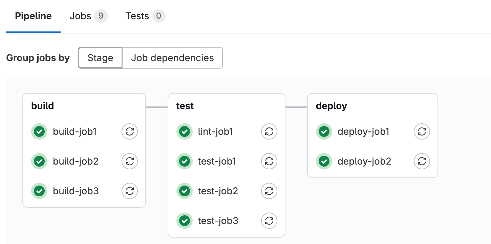
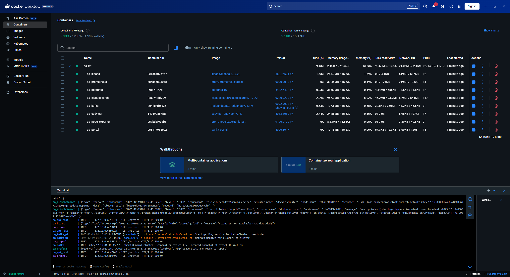

Следующие темы являются входом в отдельное направление тестирования — TestOps, и подобная база железно необходима всем обычным QA мидлам-сеньорам и будущим автоматизаторам.
Рекомендую разделить изучение материала на 3 дня:
День 1: Вникаешь в CI/CD, деплой в GitLab
День 2: Вникаешь в Git, делаешь ДЗ
День 3: Вникаешь в Docker, делаешь ДЗ, досматриваешь пару видео в конце урока
Вся эта инфа относится к теме инфраструктуры на проекте, автоматизации и оптимизации процессов сборки и разворачивания, как раз именно этим и занимаются в проектах TestOps (DevOps для тестирования). Обыкновенному тестеру также крайне полезно и важно об этом всем знать, зачастую чтобы понимать, что вообще происходит у разрабов и как выглядят их процессы, а также иногда применить эти знания в тестировании (например, откаты сборки, тестирование новых пайплайнов, локальная сборка стенда).
P.S. В сторону не копай, уйдешь в обучение на девопса :D
Ключевые слова, на что будем вообще обращать внимание в этом уроке:
Куда копать поменьше, но на собесе классно будет блеснуть этим:
Внимание: инструменты CI/CD — на проекте используется какой-то один, не вместе.
Это методология улучшения процессов разработки на проекте, некий подход к разработке. А уже в рамках этого подхода используются различные инструменты, благодаря которым достигается основная цель CI/CD:
– автоматизация сборки (интеграции нового кода с существующим — CI, Continuous Integration),
– доставки и установки (разворачивание кода на стенды, сборки — CD, Continuous Delivery/Deployment)
Каждый этап в этом процессе называется stage, содержащий в себе как минимум 1 задачу (job, джобу). А все этапы вместе образуют собой тот самый пайплайн (последовательность шагов, для запоминания с англ. — труба).

Посмотри как собираются/билдятся (CI) и разворачиваются/деплоятся на стенды (CD). На некоторых проектах тестеры сами занимаются CD, то есть разраб билдит приложение, а тестер уже сам заходит в гитлаб и устанавливает его на выбранным им стенд (в практике ничего сложного, пару тыков и подождать несколько минут).
Даже если тестер на проекте не имеет доступ к коду, не разворачивается на стенды и т.д., все равно необходимо знать о том, как устроен контроль версий в коде. Понимать, что проверка какого-то функционала может закончиться успешно на одной версии и неуспешно (баг) на другой, так как новый код может повлиять на старый функционал.
Иногда на проектах вместо стандартной модели main<-feature встречается модель с несколькими ролями, и часто это 2 роли: main и develop (dev, разработка). Основная идея git flow в том, чтобы не делать ответвления напрямую от мэйна, а сделать сначала ответвление develop — ветку в которой разработчик будет заниматься разработкой отдельно от основной ветки, в которой лежит приложение. И по готовности влить (смерджить) develop в main. Таким образом git flow модель выглядит как main<-dev<-feature
Также кроме feature веток могут быть release и hotfix ветки, для релизов и хотфиксов соответственно.
Предлагаю немного расслабиться за чилловым видосом про инфобез, в контексте нашего урока CI/CD :)
В видео выше ты уже что-то услышал о докере, но будет не лишним проработать тему отдельно.
Docker — это платформа для контейнеризации приложений со всеми их зависимостями (библиотеки, различные переменные, настройки, конфиги и т.д.). Грубо говоря высокотехнологичный архиватор, архивы (образы) которого без конфликтов можно распаковать (запустить контейнеры) на любой машине (windows, macOS, linux, сервер, облако и т.д.).
Собственно докер решает такие проблемы тестера, как:
– Необходимость кроссплатформенного тестирования (когда приложение ведет себя по-разному из-за отличающейся среды — машины)
– Длительная подготовка окружения, когда при стандартном разворачивании надо вручную подключать базы, брокеры и т.д. Докер делает это одной командой docker compose up и так же легко сворачивает окружение обратно с помощью docker compose down
– Собственно локальное поднятие стендов на своей машине, не нужно ждать разраба пока тот поднимет стенд и т.д. На некоторых проектах это уметь обязательно
– Можно тестировать разные версии приложения и его отдельных компонентов, например, если надо проверить PostgreSQL на разных ее версиях (очень быстро поднимается нужная версия)
Посмотри видео по сборке приложений через docker compose (написание самого docker-compose.yml можешь скипнуть):
cd\, убедись что на диске есть хотя бы 15Гб местаcd \disc\divanQAgit clone https://github.com/yugoru/qa_kit.gitcd qa_kitdocker compose up --build--build будет не нужен (пока собраны все образы) — можешь пользоваться только docker compose upqa_portal переходи по портам (гиперссылка 8090:80) — так ты попадешь на фронтенд приложения, сделай скринdocker ps для просмотра запущенных контейнеров, сделай скрин (если не пишется ничего в терминал, запусти новый через + справа)docker compose down
(Дополнительно) Сборка докер файлов и работа с докером под капотом — то как девопсы настраивают Dockerfile и docker-compose файл:
Инструменты, встречающиеся в инфраструктурах реальных проектов (смотри и потом можешь что-нибудь притянуть в легенду, например очень легко притянуть ArgoCD, краткий пример: «в первую очередь заходил смотрел состояние сервисов, проверял жива ли инфра, если стенд вел себя странно или сыпал 500») + повторение по ELK.
Пример взаимодействия с CI/CD:
Нижеперечисленные темы можно интегрировать в легенду, а можно вернуться на этапе изучения автотестов (либо когда уже работаешь ручным тестером, либо если решил минимально изучить автотесты для повышения шансов трудоустроиться).
Автотестер пишет код и имеет полноценный доступ к репозиториям, инструментам CI/CD (например GitLab), соответственно, собирает и запускает автотесты — и в нормальной практике все эти этапы фигурируют в джобах пайплайнов.
В чем также будет необходимо разобраться для постоянной работы с CI/CD: